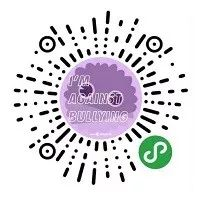

最高法院关于蛋糕艺术性的质询 | 同声传译
原创：
肯
酷儿论坛
2017-12-23
酷儿论坛

motss2002
杭州酷儿论坛（motss.info）致力于为杭州及周边地区学生性少数人群提供一个多元、健康、平等的环境，促进自我认同和社会认可。
原题：JusticesGinsburg and Kagan Ask About the Artistry of Wedding Cakes
By Jeffrey Toobin
December 5, 2017
David Mullins和Charlie Craig因为蛋糕店拒绝为他们的婚礼设计蛋糕而将对方告上了法庭。这个案件现在打到了最高法院。
Photograph byChip Somodevilla / Getty
最高法院关于Masterpiece蛋糕店的案件在周二以喜剧开场，却可能以悲剧告终。案件的起因是Charlie Craig和David Mullins希望能在科罗拉多州雷克伍德市的Masterpiece蛋糕店为他们的婚礼定制蛋糕。店主Jack Phillips出于宗教原因反对同性婚姻，并拒绝为他们设计蛋糕。这对夫夫起诉了这家店；由于该州禁止基于性取向歧视的法律，他们获得了胜诉。Phillips于是向最高法院提起上诉，认为州的裁决侵犯了他的言论自由和宗教自由权利。
Phillips的论点核心是蛋糕是他的艺术创作。要求他进行这种违背自身意愿的艺术创作就像是强迫诗人写诗一样；这种法律概念上所说的“强迫性言论”违背了宪法第一修正案。这一观点也获得了川普政府司法部的支持。在刚开始抗辩时，Elena Kagan大法官的调侃就遇上了不情愿但依旧严肃提出这一论点的蛋糕店首席律师Kristen Waggoner。
Ruth Bader Ginsburg大法官随后开始了一系列质询，她先问了婚礼请帖的设计师是否算是艺术家，并且能拒绝为同性伴侣提供服务。Waggoner回避了这个问题，而Kagan大法官则加入了质询。设计戒指的设计师呢？“这要取决于具体情况。”首席律师回应道。但Kagan大法官似乎刚刚热身完毕：那发型设计师呢？算艺术家吗？“绝对不是，”Waggoner说。“所以在这种情况下就没有表达或者应被保护的言论了。”Kagan继续追问，“化妆师（makeup artist）呢？”Waggoner说：“不是艺术家。”
“人家都叫艺术家了”Kagan回击道，“是化妆艺术家。”法庭里通常安静的听众爆发出了一阵笑声。但Kagan的质询还未结束。那为婚礼烹饪晚宴的厨师呢？“不是艺术家。”Waggoner说到。“哇哦！”Kagan回应道，“烘培师的作品 是在发表言论，但厨师就不算是发表言论了？”
Kagan的观点十分鲜明也很难被反驳。各行各业的人们的工作多少都包含了创造和表达的成分。如果法院裁定蛋糕烘培师能够基于宪法第一修正案有歧视他人的权利，那还有什么能阻止任何信教人士经营的零售企业逃脱反歧视法的制裁呢？Stephen Breyer大法官切入了这场喜剧并提出了严肃的论点。“我们问这一系列问题的原因很明显是因为我们希望能够划出一道线，以确保我们不会削弱所有的民权法律的效力，这关系到在生活，食物，家具设计，住房和建筑方面受到歧视的每一个人。”
Waggoner和总检察长Noel Francisco并没能很好地指出Breyer希望看到的这条分界线。事实上，许多保守派及其在行政当局中的同盟们正是想削弱一切反歧视的法律。（这种努力可以追溯至一系列历史悠久的反对方式——例如当年针对跨种族婚姻。）
这场判决的关键恰如当下最高院常见的格局，将由AnthonyKennedy大法官的投票来决定。一开始，他对于Craig和Mullins这对被拒绝了服务的伴侣似乎抱有同情。（Kennedy大法官是最高法院所有主要的同志平权判决的执笔者，包括之前使同性婚姻在全美五十个州合法化的Obergefell判决。）他似乎能够明白他们的遭遇是多么羞辱。他问Francisco: “如果烘培师在窗户上贴了标语——“我们不为同性婚礼制作蛋糕”……你觉得这不会是对同志社群的冒犯吗？”
但Kennedy也对烘培师的敏感表现出了尊重，而他似乎认为州法律是在伤害虔信者——展现出了“对于宗教的敌意”——而不是在保护受压迫者。而轮到科罗拉多州来为其法律辩护时，州总检察长FrederickYarger给出了一系列断断续续而无能的答复。美国公民自由联盟的国家法律总监David Cole试图在之后的发言中扳回一城。他指出法律并未强迫Phillips说或是信任何东西，只要求他平等对待所有的顾客。但Kennedy给人的感觉（也许是误导性的）是他倾向于反对Cole的立场。
案件总结中充满了关于糖霜艺术特质的证词，而这些讨论有时也转向了形而上学。（一个四岁小孩的蛋糕上的“生日快乐”究竟是来自烘培师还是这个小孩的母亲呢？）但最终来自法庭的信息是沉重的。川普政府明显觉得对于性少数群体（和其它人）的歧视是合理的，而这一回，最高法院也可能会觉得这是合法的。


欢迎扫描二维码进行打赏
长按二维码向我转账
“”
受苹果公司新规定影响，微信 iOS 版的赞赏功能被关闭，可通过二维码转账支持公众号。
阅读
微信扫一扫
关注该公众号
关注该公众号
使用小程序